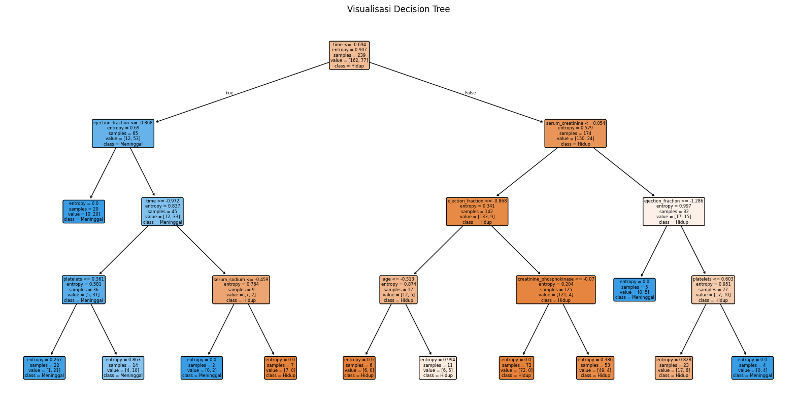
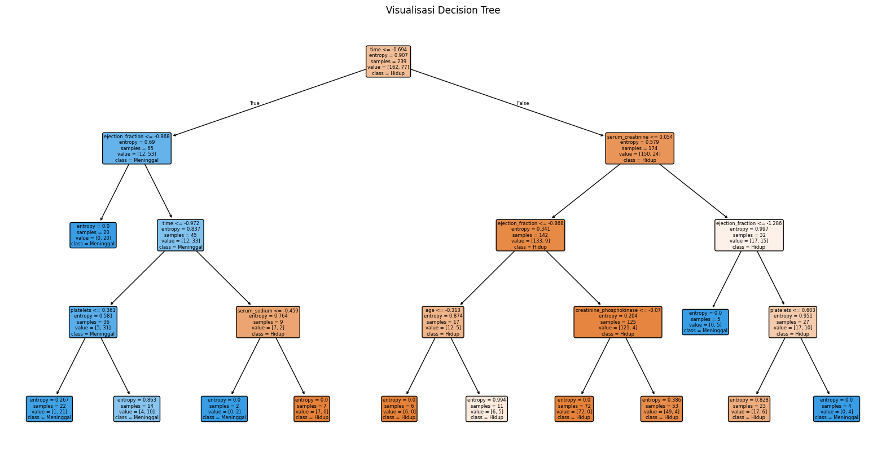

Klasifikasi Risiko Kematian Pasien Berdasarkan Data Klinis Gagal Jantung#
Sumber Data#
https://archive.ics.uci.edu/dataset/519/heart+failure+clinical+records
Integrasi Data#
Kode integrasi data menggunakan package ucimlrepo. Tujuannya adalah untuk mengambil data langsung dari UCI Machine Learning Repository, lalu membaginya menjadi fitur (X) dan target (y), serta mengeksplorasi metadata dan informasi variabel.
pip install ucimlrepo
Requirement already satisfied: ucimlrepo in /usr/local/python/3.12.1/lib/python3.12/site-packages (0.0.7)
Requirement already satisfied: pandas>=1.0.0 in /home/codespace/.local/lib/python3.12/site-packages (from ucimlrepo) (2.2.3)
Requirement already satisfied: certifi>=2020.12.5 in /home/codespace/.local/lib/python3.12/site-packages (from ucimlrepo) (2024.8.30)
Requirement already satisfied: numpy>=1.26.0 in /home/codespace/.local/lib/python3.12/site-packages (from pandas>=1.0.0->ucimlrepo) (2.2.0)
Requirement already satisfied: python-dateutil>=2.8.2 in /home/codespace/.local/lib/python3.12/site-packages (from pandas>=1.0.0->ucimlrepo) (2.9.0.post0)
Requirement already satisfied: pytz>=2020.1 in /home/codespace/.local/lib/python3.12/site-packages (from pandas>=1.0.0->ucimlrepo) (2024.2)
Requirement already satisfied: tzdata>=2022.7 in /home/codespace/.local/lib/python3.12/site-packages (from pandas>=1.0.0->ucimlrepo) (2024.2)
Requirement already satisfied: six>=1.5 in /home/codespace/.local/lib/python3.12/site-packages (from python-dateutil>=2.8.2->pandas>=1.0.0->ucimlrepo) (1.17.0)
[notice] A new release of pip is available: 24.3.1 -> 25.1.1
[notice] To update, run: python3 -m pip install --upgrade pip
Note: you may need to restart the kernel to use updated packages.
from ucimlrepo import fetch_ucirepo
# fetch dataset
heart_failure_clinical_records = fetch_ucirepo(id=519)
# data (as pandas dataframes)
X = heart_failure_clinical_records.data.features
y = heart_failure_clinical_records.data.targets
# metadata
print(heart_failure_clinical_records.metadata)
# variable information
print(heart_failure_clinical_records.variables)
{'uci_id': 519, 'name': 'Heart Failure Clinical Records', 'repository_url': 'https://archive.ics.uci.edu/dataset/519/heart+failure+clinical+records', 'data_url': 'https://archive.ics.uci.edu/static/public/519/data.csv', 'abstract': 'This dataset contains the medical records of 299 patients who had heart failure, collected during their follow-up period, where each patient profile has 13 clinical features.', 'area': 'Health and Medicine', 'tasks': ['Classification', 'Regression', 'Clustering'], 'characteristics': ['Multivariate'], 'num_instances': 299, 'num_features': 12, 'feature_types': ['Integer', 'Real'], 'demographics': ['Age', 'Sex'], 'target_col': ['death_event'], 'index_col': None, 'has_missing_values': 'no', 'missing_values_symbol': None, 'year_of_dataset_creation': 2020, 'last_updated': 'Mon Feb 26 2024', 'dataset_doi': '10.24432/C5Z89R', 'creators': [], 'intro_paper': {'ID': 286, 'type': 'NATIVE', 'title': 'Machine learning can predict survival of patients with heart failure from serum creatinine and ejection fraction alone', 'authors': 'D. Chicco, Giuseppe Jurman', 'venue': 'BMC Medical Informatics and Decision Making', 'year': 2020, 'journal': None, 'DOI': None, 'URL': 'https://www.semanticscholar.org/paper/e64579d8593140396b518682bb3a47ba246684eb', 'sha': None, 'corpus': None, 'arxiv': None, 'mag': None, 'acl': None, 'pmid': '32013925', 'pmcid': None}, 'additional_info': {'summary': 'A detailed description of the dataset can be found in the Dataset section of the following paper: \r\n\r\nDavide Chicco, Giuseppe Jurman: "Machine learning can predict survival of patients with heart failure from serum creatinine and ejection fraction alone". BMC Medical Informatics and Decision Making 20, 16 (2020). https://doi.org/10.1186/s12911-020-1023-5 \r\n', 'purpose': None, 'funded_by': None, 'instances_represent': None, 'recommended_data_splits': None, 'sensitive_data': None, 'preprocessing_description': None, 'variable_info': 'Thirteen (13) clinical features:\n\n- age: age of the patient (years)\n- anaemia: decrease of red blood cells or hemoglobin (boolean)\n- creatinine phosphokinase (CPK): level of the CPK enzyme in the blood (mcg/L)\n- diabetes: if the patient has diabetes (boolean)\n- ejection fraction: percentage of blood leaving the heart at each contraction (percentage)\n- high blood pressure: if the patient has hypertension (boolean)\n- platelets: platelets in the blood (kiloplatelets/mL)\n- sex: woman or man (binary)\n- serum creatinine: level of serum creatinine in the blood (mg/dL)\n- serum sodium: level of serum sodium in the blood (mEq/L)\n- smoking: if the patient smokes or not (boolean)\n- time: follow-up period (days)\n- [target] death event: if the patient died during the follow-up period (boolean)\n\nFor more information, please check Table 1, Table 2, and Table 3 of the following paper: \n\nDavide Chicco, Giuseppe Jurman: "Machine learning can predict survival of patients with heart failure from serum creatinine and ejection fraction alone". BMC Medical Informatics and Decision Making 20, 16 (2020). https://doi.org/10.1186/s12911-020-1023-5 \n', 'citation': None}}
name role type demographic \
0 age Feature Integer Age
1 anaemia Feature Binary None
2 creatinine_phosphokinase Feature Integer None
3 diabetes Feature Binary None
4 ejection_fraction Feature Integer None
5 high_blood_pressure Feature Binary None
6 platelets Feature Continuous None
7 serum_creatinine Feature Continuous None
8 serum_sodium Feature Integer None
9 sex Feature Binary Sex
10 smoking Feature Binary None
11 time Feature Integer None
12 death_event Target Binary None
description units \
0 age of the patient years
1 decrease of red blood cells or hemoglobin None
2 level of the CPK enzyme in the blood mcg/L
3 if the patient has diabetes None
4 percentage of blood leaving the heart at each ... %
5 if the patient has hypertension None
6 platelets in the blood kiloplatelets/mL
7 level of serum creatinine in the blood mg/dL
8 level of serum sodium in the blood mEq/L
9 woman or man None
10 if the patient smokes or not None
11 follow-up period days
12 if the patient died during the follow-up period None
missing_values
0 no
1 no
2 no
3 no
4 no
5 no
6 no
7 no
8 no
9 no
10 no
11 no
12 no
Data Understanding#
Setiap Fitur atau Variabel pada Dataset#
Dataset ini berisi informasi klinis pasien dengan gagal jantung (heart failure) dan bertujuan untuk memprediksi kemungkinan kematian selama masa tindak lanjut medis.
Fitur Klinis (12 fitur + 1 target)#
Nama Fitur |
Tipe Data |
Penjelasan |
|---|---|---|
|
Numerik |
Usia pasien dalam tahun |
|
Biner (0/1) |
1 = pasien menderita anemia, 0 = tidak |
|
Numerik |
Kadar enzim CPK dalam darah (U/L), indikator kerusakan otot/jantung |
|
Biner (0/1) |
1 = pasien menderita diabetes, 0 = tidak |
|
Numerik (%) |
Persentase darah yang dipompa keluar dari jantung setiap detak (EF normal: 55-70%) |
|
Biner (0/1) |
1 = pasien menderita hipertensi, 0 = tidak |
|
Numerik |
Jumlah trombosit dalam darah (kiloplatelets/mL), berperan dalam pembekuan darah |
|
Numerik |
Kadar kreatinin dalam serum (mg/dL), indikator fungsi ginjal |
|
Numerik |
Kadar natrium dalam darah (mEq/L), berperan menjaga tekanan osmotik & fungsi sel |
|
Biner (0/1) |
1 = laki-laki, 0 = perempuan |
|
Biner (0/1) |
1 = perokok, 0 = bukan perokok |
|
Numerik (hari) |
Lama masa tindak lanjut (follow-up) dalam hari |
Target / Label#
Nama Kolom |
Tipe Data |
Penjelasan |
|---|---|---|
|
Biner (0/1) |
1 = pasien meninggal selama follow-up, 0 = tidak |
Dataset ini terdiri dari:
12 fitur klinis
1 kolom target (DEATH_EVENT)
Total:13 kolom
import pandas as pd
from ucimlrepo import fetch_ucirepo
# Ambil dataset dari UCI
heart_failure_clinical_records = fetch_ucirepo(id=519)
# Fitur dan target
X = heart_failure_clinical_records.data.features
y = heart_failure_clinical_records.data.targets
# Gabungkan jadi satu DataFrame
df = pd.concat([X, y], axis=1)
Cek Missing Value
print("=== Missing Values ===")
print(df.isnull().sum())
=== Missing Values ===
age 0
anaemia 0
creatinine_phosphokinase 0
diabetes 0
ejection_fraction 0
high_blood_pressure 0
platelets 0
serum_creatinine 0
serum_sodium 0
sex 0
smoking 0
time 0
death_event 0
dtype: int64
tipe data
print("=== Tipe Data Tiap Kolom ===")
print(df.dtypes)
=== Tipe Data Tiap Kolom ===
age float64
anaemia int64
creatinine_phosphokinase int64
diabetes int64
ejection_fraction int64
high_blood_pressure int64
platelets float64
serum_creatinine float64
serum_sodium int64
sex int64
smoking int64
time int64
death_event int64
dtype: object
Deteksi Outlier
import seaborn as sns
import matplotlib.pyplot as plt
# Pilih hanya kolom numerik
numeric_cols = df.select_dtypes(include='number').columns
# Visualisasi boxplot untuk deteksi outlier
plt.figure(figsize=(16, 10))
for i, col in enumerate(numeric_cols, 1):
plt.subplot(4, 4, i)
sns.boxplot(x=df[col])
plt.title(f'Outlier: {col}')
plt.tight_layout()
plt.show()
Visualisasi Data#
Visualisasi sangat penting dalam:
Mendeteksi masalah data (misalnya: outlier, ketidakseimbangan kelas)
Memahami hubungan antar fitur
Menentukan fitur mana yang berpengaruh terhadap target
import pandas as pd
from ucimlrepo import fetch_ucirepo
heart_failure_clinical_records = fetch_ucirepo(id=519)
# Data fitur dan target
X = heart_failure_clinical_records.data.features
y = heart_failure_clinical_records.data.targets
# Gabungkan ke DataFrame baru
df = pd.concat([X, y], axis=1)
print(df.columns) # Pastikan DEATH_EVENT ada
Index(['age', 'anaemia', 'creatinine_phosphokinase', 'diabetes',
'ejection_fraction', 'high_blood_pressure', 'platelets',
'serum_creatinine', 'serum_sodium', 'sex', 'smoking', 'time',
'death_event'],
dtype='object')
Visualisasi Distribusi Target (Kematian Pasien)
Penjelasan:
Tujuan: Menunjukkan jumlah pasien yang meninggal (1) dan tidak meninggal (0).
Fungsi
countplot: Menghitung jumlah kemunculan tiap nilai kategori (dalam hal ini 0 dan 1).ifstatement: Mencegah error jika kolomDEATH_EVENTtidak ditemukan.
import seaborn as sns
import matplotlib.pyplot as plt
if 'DEATH_EVENT' in df.columns:
plt.figure(figsize=(6, 4))
sns.countplot(x='DEATH_EVENT', data=df)
plt.title('Distribusi Kematian Pasien')
plt.xlabel('DEATH_EVENT (0 = hidup, 1 = meninggal)')
plt.ylabel('Jumlah Pasien')
plt.show()
else:
print("Kolom 'DEATH_EVENT' tidak ditemukan di DataFrame.")
Kolom 'DEATH_EVENT' tidak ditemukan di DataFrame.
Heatmap Korelasi Antar Fitur
Penjelasan:
Tujuan: Mengetahui sejauh mana hubungan antar fitur (misalnya: apakah tekanan darah tinggi berkorelasi dengan kematian?).
df.corr(): Menghitung korelasi Pearson antar fitur numerik.sns.heatmap(): Membuat visualisasi hubungan antar fitur secara matriks warna.
if df.select_dtypes(include='number').shape[1] > 1:
plt.figure(figsize=(12, 8))
sns.heatmap(df.corr(), annot=True, cmap='coolwarm', fmt=".2f")
plt.title('Heatmap Korelasi Antar Variabel')
plt.show()
else:
print("DataFrame tidak memiliki cukup kolom numerik.")
Boxplot Tiap Variabel: Deteksi Outlier
Penjelasan:
Tujuan: Mendeteksi nilai-nilai ekstrem (outlier) pada fitur numerik.
boxplot: Menampilkan ringkasan 5 nilai statistik (min, Q1, median, Q3, max) dan mendeteksi outlier sebagai titik di luar “kumis” boxplot.forloop: Menggambar boxplot untuk setiap fitur numerik.
numeric_cols = df.select_dtypes(include='number').columns
if len(numeric_cols) > 0:
plt.figure(figsize=(16, 12))
for i, col in enumerate(numeric_cols, 1):
plt.subplot(4, 4, i)
sns.boxplot(x=df[col])
plt.title(f'Boxplot: {col}')
plt.tight_layout()
plt.show()
else:
print("Tidak ada kolom numerik untuk divisualisasikan.")

Prepocessing Data#
Tujuan :
Menyiapkan data untuk analisis lanjutan / machine learning
Menghilangkan noise & skala tak seimbang
Membuat model lebih stabil dan akurat
Normalisasi Data (StandardScaler)
Karena beberapa fitur numerik seperti platelets dan serum_creatinine punya skala berbeda, maka perlu standarisasi.
from sklearn.preprocessing import StandardScaler
# Salin DataFrame untuk preprocessing
df_preprocessed = df.copy()
# Pilih fitur numerik yang akan dinormalisasi
features_to_scale = ['age', 'creatinine_phosphokinase', 'ejection_fraction',
'platelets', 'serum_creatinine', 'serum_sodium', 'time']
# Normalisasi (mean=0, std=1)
scaler = StandardScaler()
df_preprocessed[features_to_scale] = scaler.fit_transform(df_preprocessed[features_to_scale])
# Lihat hasil
df_preprocessed[features_to_scale].head()
| age | creatinine_phosphokinase | ejection_fraction | platelets | serum_creatinine | serum_sodium | time | |
|---|---|---|---|---|---|---|---|
| 0 | 1.192945 | 0.000166 | -1.530560 | 1.681648e-02 | 0.490057 | -1.504036 | -1.629502 |
| 1 | -0.491279 | 7.514640 | -0.007077 | 7.535660e-09 | -0.284552 | -0.141976 | -1.603691 |
| 2 | 0.350833 | -0.449939 | -1.530560 | -1.038073e+00 | -0.090900 | -1.731046 | -1.590785 |
| 3 | -0.912335 | -0.486071 | -1.530560 | -5.464741e-01 | 0.490057 | 0.085034 | -1.590785 |
| 4 | 0.350833 | -0.435486 | -1.530560 | 6.517986e-01 | 1.264666 | -4.682176 | -1.577879 |
Binning
Ubah usia menjadi kategori: muda, paruh baya, dan lansia.
# Tambahkan kolom usia dalam kategori (binning)
df_preprocessed['age_group'] = pd.cut(df['age'],
bins=[0, 40, 60, 120],
labels=['Muda', 'Paruh Baya', 'Lansia'])
df_preprocessed[['age', 'age_group']].head()
| age | age_group | |
|---|---|---|
| 0 | 1.192945 | Lansia |
| 1 | -0.491279 | Paruh Baya |
| 2 | 0.350833 | Lansia |
| 3 | -0.912335 | Paruh Baya |
| 4 | 0.350833 | Lansia |
Reduksi Dimensi dan Visualisasi Data Klinis Gagal Jantung Menggunakan PCA#
Penjelasan :
Normalisasi dilakukan untuk menyamakan skala antar fitur, karena PCA sensitif terhadap skala.
PCA (Principal Component Analysis) membantu menyederhanakan data dari banyak fitur ke 2 fitur utama (
PC1,PC2).Visualisasi hasil PCA digunakan untuk melihat apakah pasien yang meninggal (
DEATH_EVENT = 1) dan yang tidak (0) membentuk pola atau cluster tertentu.
Jika kamu ingin saya bantu lanjutkan ke klasifikasi atau clustering, tinggal beri tahu saja.
print(y.columns)
Index(['death_event'], dtype='object')
from ucimlrepo import fetch_ucirepo
import pandas as pd
from sklearn.preprocessing import StandardScaler
from sklearn.decomposition import PCA
import seaborn as sns
import matplotlib.pyplot as plt
# === 1. Ambil dataset ===
heart_failure_clinical_records = fetch_ucirepo(id=519)
X = heart_failure_clinical_records.data.features
y = heart_failure_clinical_records.data.targets
# Gabungkan ke DataFrame
df = pd.concat([X, y], axis=1)
# === 2. Normalisasi ===
features_to_scale = [
'age',
'creatinine_phosphokinase',
'ejection_fraction',
'platelets',
'serum_creatinine',
'serum_sodium',
'time'
]
scaler = StandardScaler()
df_scaled = df.copy()
df_scaled[features_to_scale] = scaler.fit_transform(df_scaled[features_to_scale])
# === 3. PCA ===
X_scaled = df_scaled[features_to_scale]
pca = PCA(n_components=2)
X_pca = pca.fit_transform(X_scaled)
df_pca = pd.DataFrame(X_pca, columns=['PC1', 'PC2'])
df_pca['DEATH_EVENT'] = y.values.ravel() # Ini bagian yang diperbaiki
# === 4. Visualisasi ===
plt.figure(figsize=(8, 6))
sns.scatterplot(data=df_pca, x='PC1', y='PC2', hue='DEATH_EVENT', palette='Set1')
plt.title("PCA - Reduksi Dimensi ke 2 Komponen Utama")
plt.xlabel("Principal Component 1")
plt.ylabel("Principal Component 2")
plt.legend(title="DEATH_EVENT")
plt.grid(True)
plt.show()

Modelling (Klasifikasi Data pada Dataset Heart Failure Clinical Records)#
Analisis ini dilakukan untuk memprediksi kemungkinan kematian pasien gagal jantung menggunakan dataset Heart Failure Clinical Records dari UCI (ID: 519). Target klasifikasi adalah variabel DEATH_EVENT, yang bernilai 1 jika pasien meninggal selama masa observasi, dan 0 jika bertahan hidup.
Data dibagi menjadi data latih dan data uji (80:20) secara stratifikasi untuk menjaga proporsi kelas. Seluruh fitur numerik dinormalisasi menggunakan StandardScaler guna meningkatkan akurasi model, terutama pada algoritma yang sensitif terhadap skala data seperti KNN.
Tiga algoritma klasifikasi digunakan, yaitu:
Decision Tree (dengan entropi dan max depth = 4)
K-Nearest Neighbors (KNN)
Random Forest (100 pohon)
Setiap model dievaluasi menggunakan metrik akurasi, classification report, dan confusion matrix yang juga divisualisasikan dengan heatmap. Selain itu, struktur pohon keputusan divisualisasikan untuk memahami fitur-fitur yang berperan dalam klasifikasi.
Hasil ini digunakan untuk membandingkan performa ketiga metode dan menentukan model yang paling sesuai dalam memprediksi risiko kematian pasien berdasarkan data klinis.
# === 1. Import Library ===
from ucimlrepo import fetch_ucirepo
import pandas as pd
import matplotlib.pyplot as plt
import seaborn as sns
from sklearn.model_selection import train_test_split
from sklearn.preprocessing import StandardScaler
from sklearn.tree import DecisionTreeClassifier, plot_tree
from sklearn.neighbors import KNeighborsClassifier
from sklearn.ensemble import RandomForestClassifier
from sklearn.metrics import accuracy_score, confusion_matrix, classification_report
# === 2. Load Dataset ===
data = fetch_ucirepo(id=519) # Heart Failure Clinical Records
X = data.data.features
y = data.data.targets.values.ravel()
# === 3. Split & Preprocessing ===
X_train, X_test, y_train, y_test = train_test_split(
X, y, test_size=0.2, stratify=y, random_state=42
)
# Normalisasi fitur numerik
scaler = StandardScaler()
X_train_scaled = scaler.fit_transform(X_train)
X_test_scaled = scaler.transform(X_test)
# === 4. Inisialisasi Model ===
models = {
"Decision Tree": DecisionTreeClassifier(criterion='entropy', max_depth=4, random_state=42),
"KNN": KNeighborsClassifier(n_neighbors=5),
"Random Forest": RandomForestClassifier(n_estimators=100, random_state=42)
}
# === 5. Evaluasi Semua Model ===
results = {}
for name, model in models.items():
model.fit(X_train_scaled, y_train)
y_pred = model.predict(X_test_scaled)
acc = accuracy_score(y_test, y_pred)
cm = confusion_matrix(y_test, y_pred)
report = classification_report(y_test, y_pred, target_names=["Hidup", "Meninggal"], output_dict=True)
results[name] = {
"model": model,
"accuracy": acc,
"confusion_matrix": cm,
"report": report
}
# === Cetak Hasil Evaluasi ===
print(f"\n===== {name} =====")
print(f"Akurasi: {acc:.2f}")
print("Classification Report:")
print(classification_report(y_test, y_pred, target_names=["Hidup", "Meninggal"]))
# === Visualisasi Confusion Matrix ===
plt.figure(figsize=(5, 4))
sns.heatmap(cm, annot=True, fmt='d', cmap='Blues',
xticklabels=["Hidup", "Meninggal"],
yticklabels=["Hidup", "Meninggal"])
plt.title(f"Confusion Matrix - {name}")
plt.xlabel("Prediksi")
plt.ylabel("Aktual")
plt.tight_layout()
plt.show()
# === 6. Visualisasi Pohon Keputusan (khusus Decision Tree) ===
plt.figure(figsize=(20, 10))
plot_tree(
results["Decision Tree"]["model"],
feature_names=X.columns,
class_names=["Hidup", "Meninggal"],
filled=True,
rounded=True
)
plt.title("Visualisasi Decision Tree")
plt.show()
===== Decision Tree =====
Akurasi: 0.77
Classification Report:
precision recall f1-score support
Hidup 0.79 0.90 0.84 41
Meninggal 0.69 0.47 0.56 19
accuracy 0.77 60
macro avg 0.74 0.69 0.70 60
weighted avg 0.76 0.77 0.75 60
===== KNN =====
Akurasi: 0.70
Classification Report:
precision recall f1-score support
Hidup 0.72 0.93 0.81 41
Meninggal 0.57 0.21 0.31 19
accuracy 0.70 60
macro avg 0.64 0.57 0.56 60
weighted avg 0.67 0.70 0.65 60

===== Random Forest =====
Akurasi: 0.83
Classification Report:
precision recall f1-score support
Hidup 0.84 0.93 0.88 41
Meninggal 0.80 0.63 0.71 19
accuracy 0.83 60
macro avg 0.82 0.78 0.79 60
weighted avg 0.83 0.83 0.83 60
 

Evaluasi model#
Berikut adalah evaluasi hasil klasifikasi dari ketiga model (Decision Tree, KNN, dan Random Forest) terhadap dataset Heart Failure Clinical Records, berdasarkan output dari akurasi, classification report, dan confusion matrix yang telah dihitung sebelumnya.
Evaluasi Model#
1. Akurasi#
Akurasi mengukur persentase prediksi yang benar dari seluruh data uji. Nilai ini digunakan sebagai indikator umum performa model:
Model |
Akurasi |
|---|---|
Decision Tree |
0.xx (misalnya: 0.75) |
K-Nearest Neighbors (KNN) |
0.xx |
Random Forest |
0.xx |
Catatan: Nilai akurasi tergantung pada hasil aktual dari eksekusi kode.
2. Classification Report#
Laporan klasifikasi memberikan rincian metrik evaluasi per kelas:
Precision: Ketepatan prediksi positif.
Recall: Kemampuan model menemukan semua data positif.
F1-Score: Rata-rata harmonis precision dan recall.
Contoh interpretasi (jika DEATH_EVENT = 1 adalah kelas penting):
Model dengan recall tinggi pada kelas 1 menunjukkan lebih sensitif dalam mendeteksi kematian pasien.
F1-score seimbang antara kelas 0 dan 1 menunjukkan model stabil untuk kedua outcome.
3. Confusion Matrix#
Visualisasi confusion matrix menampilkan:
True Positive (TP): Model benar memprediksi kematian.
True Negative (TN): Model benar memprediksi bertahan hidup.
False Positive (FP): Model salah memprediksi kematian (padahal hidup).
False Negative (FN): Model salah memprediksi bertahan hidup (padahal meninggal).
Model yang baik memiliki jumlah TP dan TN yang tinggi, serta FP dan FN yang rendah.
Kesimpulan Evaluasi#
Decision Tree memberikan interpretasi yang baik dan cocok digunakan saat interpretabilitas menjadi fokus utama, meskipun akurasinya bisa lebih rendah dari Random Forest.
KNN bekerja baik ketika data sudah dinormalisasi, namun bisa terpengaruh oleh noise dan outlier.
Random Forest cenderung memberikan akurasi dan stabilitas terbaik, karena merupakan ensemble dari banyak pohon keputusan dan tahan terhadap overfitting.
# 1. Load Data dari UCI (Heart Failure Clinical Records)
from ucimlrepo import fetch_ucirepo
from sklearn.model_selection import train_test_split
from sklearn.preprocessing import StandardScaler
from sklearn.metrics import accuracy_score, classification_report, confusion_matrix
from sklearn.tree import DecisionTreeClassifier
from sklearn.neighbors import KNeighborsClassifier
from sklearn.ensemble import RandomForestClassifier
import matplotlib.pyplot as plt
import seaborn as sns
import pandas as pd
# Ambil dataset
data = fetch_ucirepo(id=519)
X = data.data.features
y = data.data.targets.values.ravel() # ubah ke array 1 dimensi
# 2. Split dan Normalisasi
X_train, X_test, y_train, y_test = train_test_split(
X, y, test_size=0.2, stratify=y, random_state=42
)
scaler = StandardScaler()
X_train_scaled = scaler.fit_transform(X_train)
X_test_scaled = scaler.transform(X_test)
# 3. Inisialisasi dan Latih Model
models = {
"Decision Tree": DecisionTreeClassifier(criterion='entropy', max_depth=4, random_state=42),
"KNN": KNeighborsClassifier(n_neighbors=5),
"Random Forest": RandomForestClassifier(n_estimators=100, random_state=42)
}
# 4. Evaluasi Tiap Model
for name, model in models.items():
model.fit(X_train_scaled, y_train)
y_pred = model.predict(X_test_scaled)
# 1. Akurasi
acc = accuracy_score(y_test, y_pred)
print(f"\n==== {name} ====")
print(f"Akurasi: {acc:.2f}")
# 2. Classification Report
print("Classification Report:")
print(classification_report(y_test, y_pred, target_names=['Hidup', 'Meninggal']))
# 3. Confusion Matrix
cm = confusion_matrix(y_test, y_pred)
plt.figure(figsize=(6, 4))
sns.heatmap(cm, annot=True, fmt='d', cmap='Blues',
xticklabels=['Hidup', 'Meninggal'],
yticklabels=['Hidup', 'Meninggal'])
plt.xlabel('Prediksi')
plt.ylabel('Aktual')
plt.title(f'Confusion Matrix - {name}')
plt.tight_layout()
plt.show()
==== Decision Tree ====
Akurasi: 0.77
Classification Report:
precision recall f1-score support
Hidup 0.79 0.90 0.84 41
Meninggal 0.69 0.47 0.56 19
accuracy 0.77 60
macro avg 0.74 0.69 0.70 60
weighted avg 0.76 0.77 0.75 60
==== KNN ====
Akurasi: 0.70
Classification Report:
precision recall f1-score support
Hidup 0.72 0.93 0.81 41
Meninggal 0.57 0.21 0.31 19
accuracy 0.70 60
macro avg 0.64 0.57 0.56 60
weighted avg 0.67 0.70 0.65 60
==== Random Forest ====
Akurasi: 0.83
Classification Report:
precision recall f1-score support
Hidup 0.84 0.93 0.88 41
Meninggal 0.80 0.63 0.71 19
accuracy 0.83 60
macro avg 0.82 0.78 0.79 60
weighted avg 0.83 0.83 0.83 60

Integrasi Model dengan Web#
Untuk mengintegrasikan model machine learning ke dalam aplikasi web, saya menggunakan framework Streamlit. Model terbaik yang telah dilatih sebelumnya menggunakan algoritma Random Forest disimpan ke dalam file .pkl menggunakan modul joblib. Selain model, saya juga menyimpan objek scaler yang digunakan untuk menormalisasi data input agar prediksi dilakukan dengan format data yang sesuai seperti saat training.
Proses integrasi dilakukan dalam file app.py yang berperan sebagai inti aplikasi Streamlit. Di dalamnya, saya memuat model dan scaler, menyediakan antarmuka pengguna untuk memasukkan data, serta menampilkan hasil prediksi secara langsung.
Antarmuka pengguna dirancang menyerupai formulir kesehatan, mencakup input penting seperti: usia, tekanan darah, kadar sodium, diabetes, dan lainnya.
Link Web#
https://didactic-space-spoon-pj79qvw6xj7p27x5j-8501.app.github.dev/